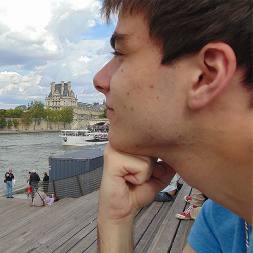

Lion Bastien
Poste/mission : Journaliste web / Chargé de multimédia
Entreprise : La Nouvelle République / Centre Presse
Lieu : Poitiers
Contacter l'étudiantPoste/mission : Journaliste web / Chargé de multimédia
Entreprise : La Nouvelle République / Centre Presse
Lieu : Poitiers
Contacter l'étudiantMédias
La Nouvelle République / Centre Presse
Presse écrite
Poitiers (86000)
La Nouvelle République et Centre Presse sont deux titres de presse quotidienne régionale. La mission de leurs rédactions communes est donc de fournir aux lecteurs une information locale aussi détaillée et complète que possible.
Du 20 avril au 17 juillet 2015.
Rédaction départementale.
Journaliste web / Chargé du multimédia.
Production de contenus multimédia, community management, gestion des sites web des deux titres.
Élément déclencheur J'avais déjà effectué un stage à la rédaction départementale de ces deux journaux l'an dernier, en tant que journaliste. J'avais alors pu mesurer l'importance croissante que prenait le web dans le développement des contenus rédactionnels, même au sein de cette rédaction relativement modeste. D'où mon désir d'approfondir ce ressenti par le biais d'un stage plus spécifique.
Faire vivre les deux titres sur les médias sociaux et proposer de nouvelles formes de contenus multimédia, et en particulier web.
Travailler dans un environnement pas forcément ouvert à l'expansion du web dans les médias, avec des outils (CMS maison, ordinateurs...) pas toujours adaptés, ni très récents.
Indépendance assez importante au sein de la rédaction. J'avais la possibilité de travailler sur les tâches que l'on me demandait tout en développant différents contenus multimédia que je pouvais ensuite proposer à ma direction, souvent avec succès.
Pour anticiper la couverture du congrès du Parti socialiste à Poitiers, on m'a demandé de réfléchir à un moyen d'en présenter les enjeux de manière didactique et interactive. J'ai donc proposé une présentation en ligne de type Prezi.
Voir la réalisationOui.
L'article comportant ma présentation a été repris sur le site national de La Nouvelle République.
L'article a été l'un des plus lus de sa semaine de parution sur le site. Toutefois, peu de lecteurs ont commenté sa publication sur les réseaux sociaux, ce qui au final, ne me permet pas d'en évaluer la pertinence.
J'ai reçu les félicitations du directeur départemental.
Je suis mitigé. D'un côté, je suis satisfait de la réaction de mes collègues au sein de la rédaction (locale et nationale), ainsi que de ma production, que je trouve claire et bien exécutée, mais en même temps, ne pas avoir eu plus de retours du côté du lectorat est un peu frustrant. Je ne peux pas être sûr que ce dernier a bien compris la démarche, voir même son fonctionnement. D'autant que l'inconvénient de Prezi réside dans sa difficulté de lecture sur certains navigateurs et sur tablettes.
S'adapter. Dans n'importe quelle équipe et dans n'importe quelle structure, il faut apprendre à jongler avec les personnalités de chacun, les possibilités technologiques qui s'offrent à nous... Savoir faire preuve d'indépendance et d'autonomie dans certaines situations, de curiosité et de questionnement dans d'autres. Même si nous sommes là pour apprendre, il ne faut pas oublier que nous possédons également un savoir à partager. Ne pas hésiter à conseiller ses collègues sur certains points (sans toutefois en faire trop). C'est aussi une manière de s'intégrer, et de rendre la pareille.
Je chercherais à approfondir certains apprentissages comme la prise de photos ou de vidéos. J'aurais également aimé mettre en place une plus grande interactivité entre la rédaction et le lectorat.
La rédaction multimédia, la couverture live d'événements d'envergure. L'intégration au sein d'une équipe très hétéroclite.